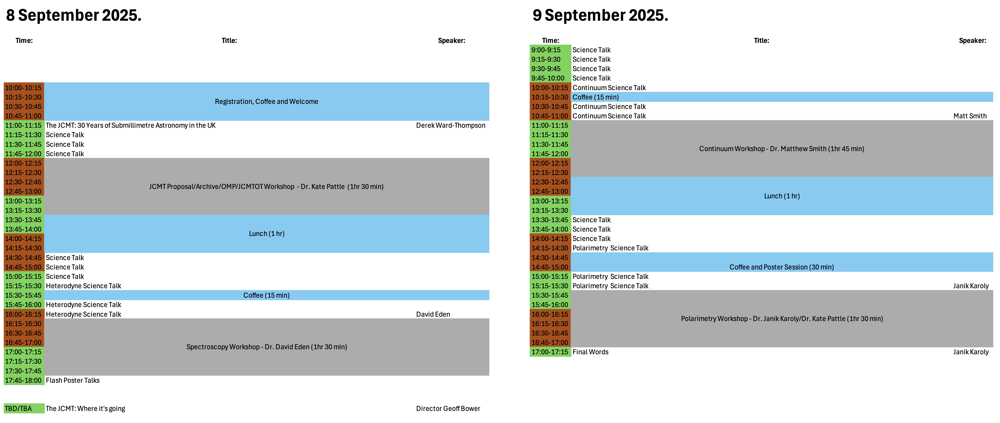

Special thanks to the UCL Doctoral School for funding as part of the Researcher Networks/Academic Societies Fund
Additional thanks to the Science and Technology Facilities Council for matched funding
The school will include four workshop sessions on using the JCMT:
There is also ample time in the schedule for science talks from attendees, and for discussion.
Janik Karoly — j.karoly at ucl.ac.uk
Kate Pattle — k.pattle at ucl.ac.uk
Special thanks to the UCL Doctoral School for funding as part of the Researcher Networks/Academic Societies Fund
Additional thanks to the Science and Technology Facilities Council for matched funding